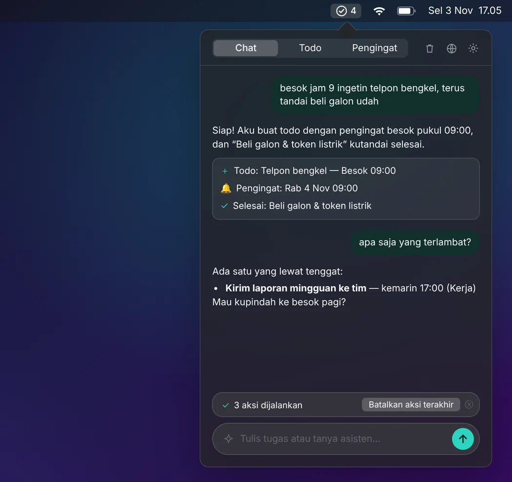
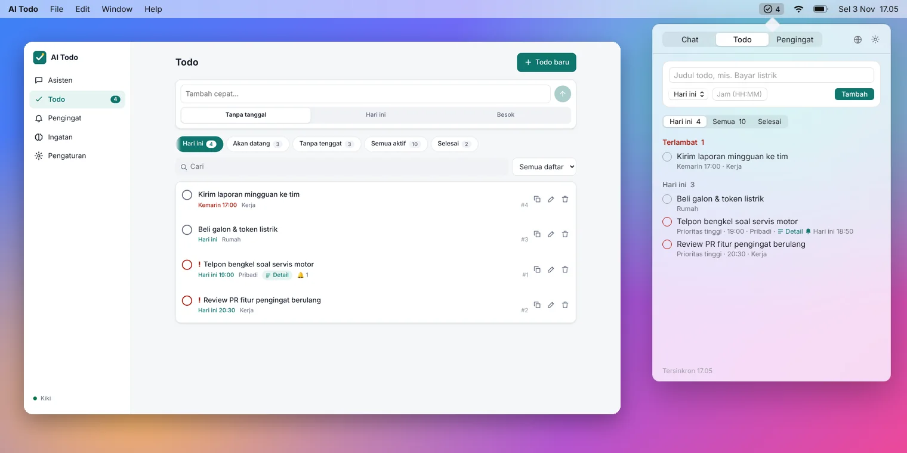
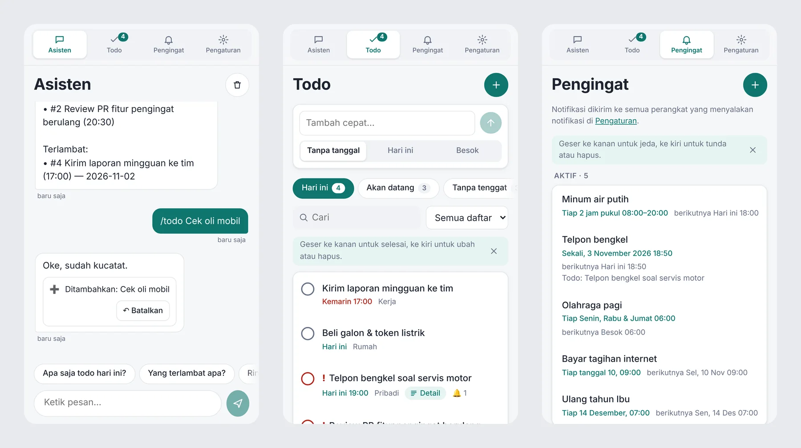

Harian, mingguan, tiap 2 jam di jam kerja.
Asisten ingat kebiasaan & konteksmu.
Aksi berisiko selalu minta konfirmasi.
Web Push di HP, notifikasi lokal di Mac.
Semua bisa lewat form, tanpa AI.
Satu binary Go + SQLite. Key AI tetap di server.